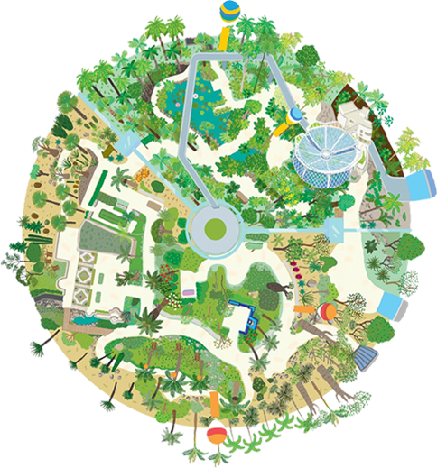

관람지도
온실정원
한국 자생식물로 전통정원을 재현한 야외 주제정원과 열대, 지중해12개 도시 식물을 전시한 온실로 구성됩니다. 어린이 정원학교와 서울시 등록문화재로 지정된 마곡문화관(옛 배수펌프장)을 만나볼 수도 있습니다.
주요시설
식물문화센터, 어린이정원학교, 마곡문화관
지중해와 열대기 환경을 바탕으로 독특한 식물문화를 발전시킨 세계 12개 도시 정원을 관람할 수 있습니다
호수정원
호수 주변으로 산책길과 수변관찰 데크가 조성된 공간. 호수계단에 앉아 식물원을 조망하거나 습지식물과 텃새를 관찰할 수도 있는 휴식공간이자 생태 교육장입니다.
주요시설
호수횡단보행교, 어린이놀이터, 물놀이터
새로운 정원모델을 제시하는 작가들의 실험공간으로 앞으로 유행할 정원 트랜드를 만나볼 수 있습니다.
꽃의정원
서울식물원과 한강이 만나는 지점으로, 꽃이 만드는 경이로운 생태경관을 관찰할 수 있습니다. 다양한 꽃이 보존되어 생물종다양성이 실현되는 공간입니다. 한강나들목을 통해 식물원을 편리하게 찾아올 수 있습니다.
주요시설
한강전망데크, 새관찰대, 한강나들목
계절을 대표하는 식물이 전시되어 꽃이 피고 무르익고 흩어지는 과정의 아름다움을 감상할 수 있습니다.
나무정원
인공나무와 대형 나무로 이루어진 커다란 테마파크로 다양한 나무들을 만날 수 있으며 밤이 되면 네온옷을 입은 인공나무들을 구경할 수 있는 공간입니다. 인공나무 다리에 올라가면 한강 나들목을 한 눈에 볼수 있습니다.
주요시설
트리타워, 네온트리 감상대, 나무의 쉼터
우리에게 잘 알려지지 않은 한반도의 자생종과 특산식물로 한국의 전통 숲을 재현했습니다.


해당 아이콘을 클릭하시면 세부 사진 정보를 확인할 수 있습니다.